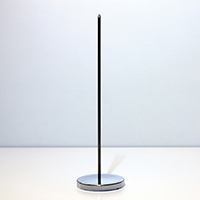
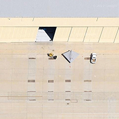
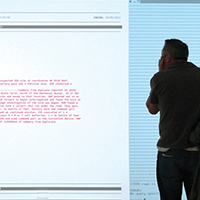
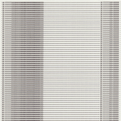

Pink Sheet Method - an ODI commission
Thickear’s triptychal response to Data as Culture involves processes of data collection, exhibition, re-examination and degradation. Taking place over three locations, Pink Sheet Method investigates the gestural notions of exchange and trust invested in sharing information, as well as the validity and limitations of data analysis – or data fracking – over time.
Event #1 White Sheet - FutureEverything, Manchester, 29/30 March 2014 Pink Sheet Method commences with a series of data gathering consultancies in which participants are issued with limited edition prints created through an audit of personal data sharing.
Event #2 Pink Sheet - ODI, London, 11 April 2014 Carbonless paper copies of the original document are revealed through an office intervention at the Open Data Institute.
Event #3 Blue Sheet - Lighthouse, Brighton, June/July 2014 (date TBC) During a final performance presentation at Lighthouse, thickear share newly acquired knowledge attained through Pink Sheet Method and expose the last remnants of the data. The archived work will then return to the ODI.
Artist biography: ThickearInvisible Airs
In 2011, YoHa, assisted by Stephen Fortune, attempted to read the 20,000 comma-separated lines of the apparently open Bristol City Council expenditure database. Concluding that power revealed itself through multiple layers of boredom, they decided that the best way to reveal the relations contained within the databases to the people affected by it would be to construct four contraptions which would enable visitors to: Test their aim with the Expenditure Filled Spud Gun; Balance the books with the Open Data Book Stabber; Polish the floor with an Older People Pneumatic Brusher; and, Grab the civic reins with the Public Expenditure Riding Machine. Originally operated by linking them to computers analyzing entries in the expenditure database, any expense over £500 caused the contraptions to rise, stab, shoot and brush in a series of seemingly meaningless actions.
Presented at the ODI and Lighthouse are the Open Data Book Stabber, the Public Expenditure Riding Machine, the Expenditure Filled Spud Gun, as well as the Invisible Airs documentary by Alistair Oldham.
Artist biography: Yoha - Graham Harwood and Matsuko YokokojiWatching the Watchers
Watching the Watchers is an ongoing series of images taken from publicly-available digital satellite maps, of unmanned aircraft around the world, at training bases in the US desert and secret installations in Afghanistan, Pakistan, and elsewhere. These military technologies, designed to operate without being seen - visually, politically, or morally – are nevertheless accessible to the gaze of contemporary, civilian networks. By rendering them visible, we render their operation and politics legible, and thus open to intervention.
AQD Remembrancer – an ODI CommissionNamed after the the US Department of Defence ‘Disposition Matrix’, an advanced but opaque database developed as a ‘next-generation capture / kill list’, AQD (A Quiet Disposition) is an open-source intelligence-gathering tool using contextual analysis, machine learning, and publicly-available information to build up a detailed database of people, companies and places connected with the development and use of military drones, matching them against data from London financial sector and stock exchange and exposing hidden connections. Referring to the intent encoded into technology and its disposition to reproduce the political aims of its creators, AQD both mirrors and interrogates the politics of systems.
Artist biography:James BridlePunchcard Economy
Exhibited across all three Data as Culture spaces, Punchcard Economy banners are large-scale knitted data visualisation, based on the Robert Owen’s 8 Hour Day Movement slogan: ‘8 Hours Labour, 8 Hours Recreation, 8 Hours Rest’. The work incorporates contemporary data about working hours within the ‘digital’ economy, collected via a virtual punchcard on the project website, to map the shift from Owen’s ideal. Translating work patterns into knitting patterns using the similar punchcard technology, each misplaced stitch represents an hour of work done outside of the 8 hour ‘contract’.
Visitors are invited to contribute to the project by using the website to track their own working hours. The work has been created using a Brother KH950i electronic domestic knitting machine (produced 1988), and uses the DaviWorks IMG2Track software (daviworks.com/knitting) and PPD cable hack to transfer digital image files from the mac to the knitting machine. Punchcard Economy has been supported by FACT Liverpool and Arts Council England. Punchdrunk Economy
ODI: 3.5 x 0.5m knitted banner, FutureEverything: 5 x 3m knitted banner & knitting machines
Artist biography: Sam MeechEndless War
On 25th July 2010, WikiLeaks released the Afghan War Diary, exposing over 91,000 (15,000 withheld) reports covering the war in Afghanistan from 2004 to 2010. Written by soldiers and officers, the data includes intelligence information, descriptions of military actions, meetings and other information. The entries were analysed by software looking for repeated patterns of events, spatial information, kinds of actors, timings and other factors. While some of the data was interpreted and published by newspapers, the full data set - containing endless permutation of jargon, acronyms and cross-references - remains mostly inaccessible. Endless War is a video installation revealing the real-time processing of this data seen from a series of different analytical points of view: each individual entry, phrase matching between entries and searches for the frequency of terms. It shows how the way war is thought relates to the way it is fought. Both are seen as, potentially endless, computational processes. The algorithmic imaginary of contemporary power meshes with the drawn out failure of imperial adventure.
Artist biography: Yoha - Graham Harwood and Matsuko Yokokoji & Matthew FullerOnline Exhibition Catalogue: your fingerprints on the artworks are the artwork itself - an ODI commission
Your fingerprints on the artworks are the artwork itself – an ODI Commission
Paolo was invited to conceptualise and develop an online catalogue that would be informative while questioning the cyclical nature of metadata. Continually generating material, the catalogue harvests and repurposes visitors ‘browser fingerprint’ data to create new representations of the exhibited works. Unlike a traditional archive, the catalogue continues to grow and evolve with each viewing, presenting an innovative opportunity for visitors to become a part of the work itself. dataasculture.org
Artist biography: Paolo CirioPillars of Hercules
Utilising the readily available ‘general enquiry’ telephone numbers of European Union embassies based in London, Brooks has fictitiously constructed 10 telephone call logs as A4 printed sheets, where the various embassies have been recorded hypothetically conversing with each other. However, the original telephone numbers are further complicated via a simple, repetitive, numerical strategy - duplicating each numeral a self-referential amount of times. This repetition is intended to aesthetically encourage the reference to the modular construction of ancient architectural columns - and in turn historic notions of: administration, stability, democracy and the civic order underpinning European society.
Digital prints on archival paper, 10 x 29.7 x 21cm (framed dimensions 35 x 27cm)
Artist biography: James Brooks